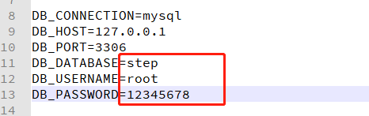
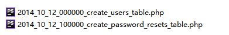
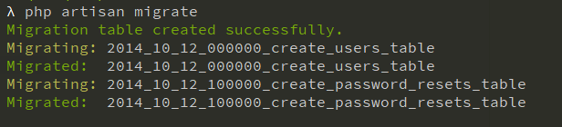
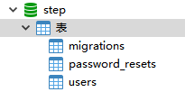
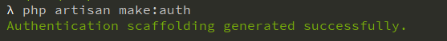
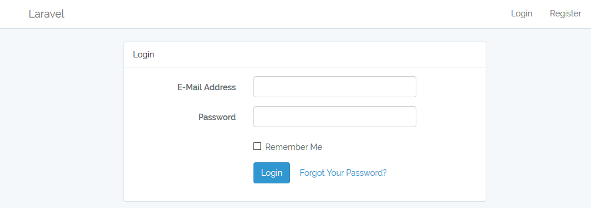
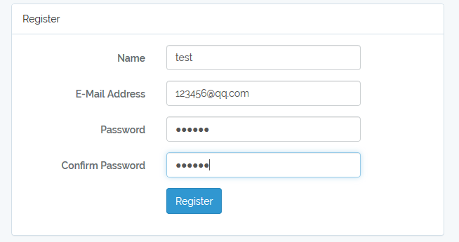
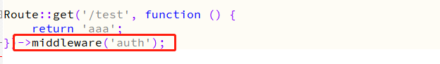

通过 Composer 创建项目
composer create-project --prefer-dist laravel/laravel step "5.5.*"安装时可能会因为各种原因失败，切换源，多安装几次应该就可以了（注意看报错信息）。
这里只显示了数据库相关的配置：


使用 artisan 命令 migrate 运行所有未完成的迁移
php artisan migrate

这样，相应的数据表就建立完成了，如果需要修改字段，修改相应的 migration 文件，运行迁移即可，这里不作修改。
使用 Laravel 提供的命令
php artisan make:auth
这时访问网址： http://your-site/login ，就会看到类似下面的界面

没错，你还没有帐号，需要注册，点击上图的 Register ，辣死狗

填写相应的信息，提交后完成注册，这时就可以登录了。（当然，注册完成会自动登录，并跳转到 /home 下）
点击 logout 退出登录，跳转到网站根目录。
在网站应用中，有一些页面是需要用户登录后才可以访问的，那么要怎么做呢？在创建路由的时候加上中间件 auth。
添加路由 test

这时，访问 http://your-site/test 是不可以正常访问的，会跳转到登录界面（什么？你的没有跳转？？恐怕是已经登录了吧）。
至此，差不多就完成了，毕特 for。
其它相关操作后面会更新。。。（不说了，做饭去）